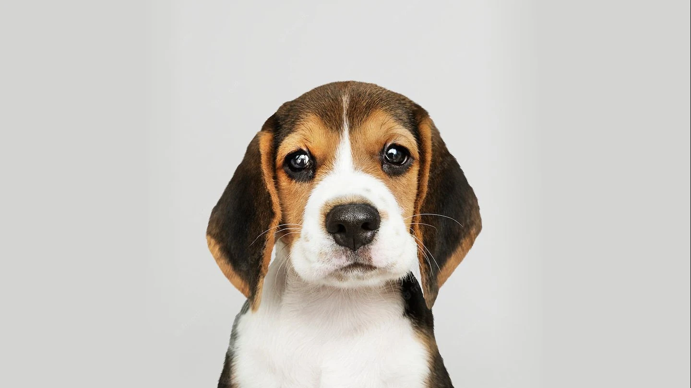

Anjing
Anjing dikenal sebagai sahabat terbaik manusia. Hewan ini setia, ramah, dan cerdas, menjadikannya pilihan populer sebagai hewan peliharaan.
- Beberapa jenis anjing populer: Golden Retriever, Labrador Retriever, German Shepherd, Bulldog, dan Poodle.
- Anjing membutuhkan banyak perhatian, latihan, dan perawatan.
Kucing

Kucing dikenal sebagai hewan yang mandiri, lucu, dan menggemaskan. Hewan ini relatif mudah dipelihara dan tidak membutuhkan banyak latihan seperti anjing.
- Beberapa jenis kucing populer: Persia, Siam, Maine Coon, Sphynx, dan British Shorthair.
- Kucing perlu disikat bulunya secara teratur dan membutuhkan kotak pasir.